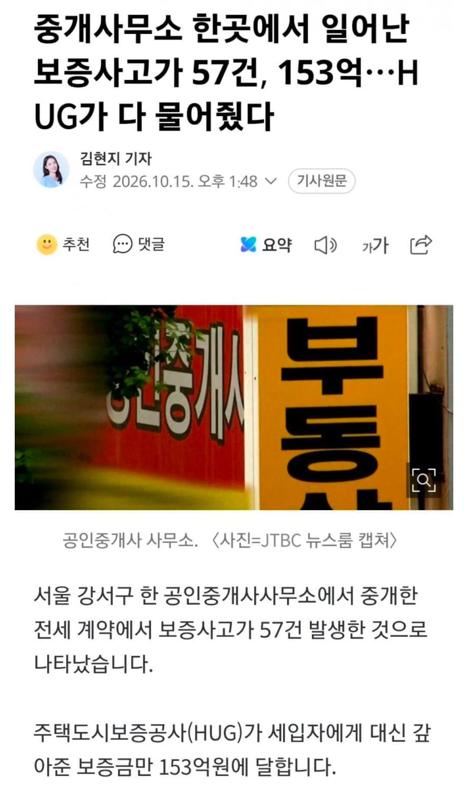
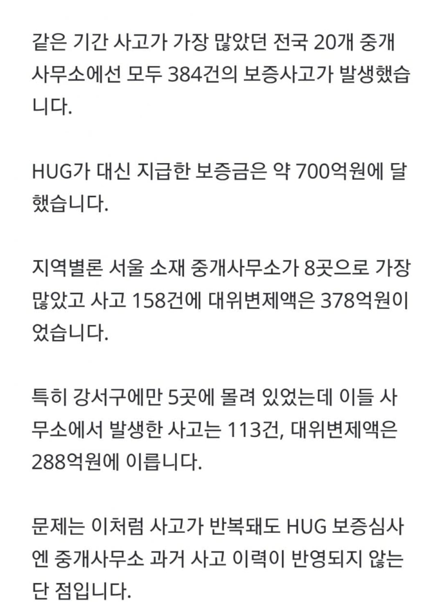

강서구 공인중개소 한곳에서 57건 보증사고 발생
다른곳들도 난리인데
중개사무소 과거 사고 이력은 HUG 보증심사에 반영안됨


강서구 공인중개소 한곳에서 57건 보증사고 발생
다른곳들도 난리인데
중개사무소 과거 사고 이력은 HUG 보증심사에 반영안됨
보증사고가 전세사기야?
모럴해저드임.
부동산 : 거래만 되면 수수료 받으니 대충 합시다.
세입자 : 보험금 내면 어짜피 전세금 HUG에 받으면 됨
임대인 : 전세금 어차피 HUG가 주자나 MAX세팅해서 레버리지 ㄱㄱ
이러다가 터지면 임대인 배째고 세입자는 HUG통해 가져가는거
모럴해저드를 넘어서 R 주고받는 사기임
사고.겟음???
원래 나쁜놈들이 머리회전이 빠르고 성실한거지
저정도면 사기꾼 동료인데....
저건 공범 아님?
저건 조직이지 같은 한패
허그도 중간에 검사안함?
세금 달달하고~
공인 빠지고 중개 빠지고 사만 남았네
아 그냥 전세좀 없애라 좀
돈없으면 그냥 지방으로 꺼지든가
월급의 1/3 월세로 내던가
난 자가 있어서 알빠아니긴함
ㅇㅇ 그니까 돈없는 애들 아득바득 붙어있지말고 그냥 꺼지라는 얘기였음ㅋ
실무자들이 문제있다고 느끼는게 정책에 전혀 반영이 안됨. 공공기관이 다 그런식
HUG는 구상권 청구 안함? 해도 못 받겠구나.
함 저러고 자살하는애들이 좀 될껄 바지세워서 그 바지가 빚몰아주고 나머지가 달달하게 챙기는방힉
저정도면 중개사 자격박탈하고 중개사에게도 파산에 이를 정도로 청구를 해라.
뭔 시바 문따개 새끼들 책임은 안 지고 돈만 쪽쪽 빨고 사고나면 다 세금처리야.
'공인'중개사인데 책임은 ㅈ도안지ㄴ느 새끼들
내가 책임은 안지는데 수수료는 일단 내라고요
아니 한두푼 받는것도아닌데 저정도면 책임좀 물어야하는거 아니냐
중개사 면허취소 하고 민사로도 조져야지 뭐하는거야
쟤는 진짜로 손목발목 짤라야겠다
중개사 책임 강화해야함
받는 만큼 책임도 져야지